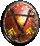

| Original Name | Nom Français |
| Drachenshield | Ecu de Drachen |
|
 |
|
| Lieu |
| Zone Séraphe Mystique / Forêt de non-retour |
| Bonus |
| +50 Att |
| Commentaires |
| 2 Commentaires |
Mat de Lock
 Messages: 96 |
-125 endu Bouclier indropable pour les 125 endu. On note les bonus d'attaque toujours ympa à avoir et qui font que dès qu'on l'a on va se passer du vieux bouclier de la tour.
Posté le : 29-12-2003 10:47:01 |
Avoghai Thays
 Messages: 0 |
Bouclier du Drachen Bon et bien je pense que le principal atout de ce bouclier est qu'il est indroppable mais il est vrai que beaucoup de joueur aime sont style car il est vrai qu'il sort de l'ordinaire et je vois bcp de Séraphes qui le porte alors qu'ils ont 300 en endurance donc je pense que se bouclier est bcp aimé pour son estétique.
Posté le : 26-03-2004 11:01:50 |